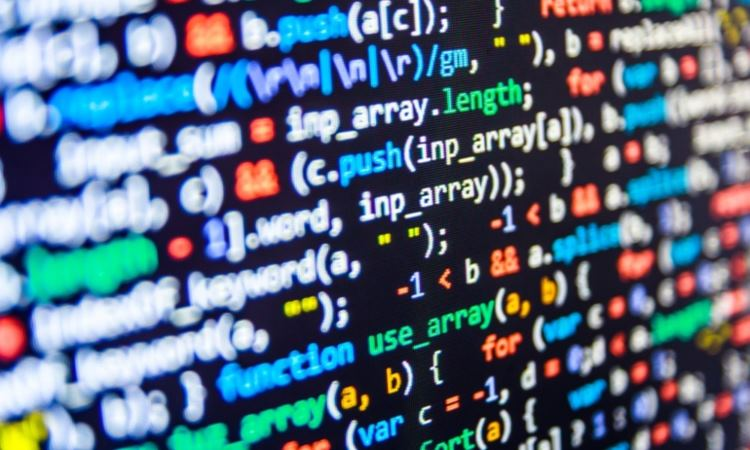

La programación es el proceso utilizado para idear y ordenar las acciones necesarias para realizar un proyecto, preparar ciertas máquinas o aparatos para que empiecen a funcionar en el momento y en la forma deseados o elaborar programas para su empleo en computadoras.
En la actualidad, la noción de programación se encuentra muy asociada a la creación de aplicaciones de informática y videojuegos. En este sentido, es el proceso por el cual una persona desarrolla un programa, valiéndose de una herramienta que le permita escribir el código (el cual puede estar en uno o varios lenguajes, como C++, Java y Python, entre otros) y de otra que sea capaz de “traducirlo” a lo que se conoce como lenguaje de máquina, que puede "comprender" el microprocesador.

HERRAMIENTAS DE PROGRAMACION
Las herramientas de programación, son aquellas que permiten realizar aplicativos, programas, rutinas, utilitarios y sistemas para que la parte fisica del computador u ordenador, funcione y pueda producir resultados.
Hoy dia existen multiples herramientas de programación en el mercado, tanto para analistas expertos como para analistas inexpertos.
Las herramientas de programación más comunes del mercado, cuentan hoy dia con programas de depuracion o debugger, que son utilitarios que nos permiten detectar los posibles errores en tiempo de ejecucion o corrida de rutinas y programas.
Entre otras herramientas de programación encontramos librerias y componentes, dados por algunos lenguajes de programación como son el C++ y delphi.
Otras herramientas de programación son los lenguajes de programación, que nos permitemn crear rutinas, programas y utilitarios.
Entre algunas de estas herramientas de programación tenemos:
Basic y Pascal que son herramientas de programación, idoneas para la inicializacion de los programadores.
C y C++ que sirven para la programación de sistemas.
Cobol, que es una herramienta de programación orientada hacia sistemas de gestion empresarial como nominas y contabilidad.
Fortran, que son lenguajes especificos para calculos matematicos y o numericos.
Herramientas de programación para ambientes graficos como son Visual Basic, Delphi y Visual C.
Html y Java, que permiten la creacion de paginas WEB para internet.

TIPO DE DATOS EN PROGRAMACION
Para programar, es necesario identificar a qué tipo de datos pertenecen cada una de las variables o constantes, ya sean estos números, letras, palabras, frases, entre otros y cada uno corresponde a un tipo de dato, que requerirá de una manipulación específica para obtener los resultados deseados. Cada lenguaje de programación dispone de un conjunto de tipos de datos que puede manipular; sin embargo los que aquí se presentan corresponden a aquellos que todos los lenguajes de programación disponen, y que se conocen como tipos de datos estándares. La siguiente tabla presenta una descripción de éstos. .
C++
Es un lenguaje de programación diseñado en 1979 por Bjarne Stroustrup. La intención de su creación fue extender al lenguaje de programación C mecanismos que permiten la manipulación de objetos. En ese sentido, desde el punto de vista de los lenguajes orientados a objetos, C++ es un lenguaje híbrido.
El nombre "C++" fue propuesto por Rick Mascitti en el año 1983, cuando el lenguaje fue utilizado por primera vez fuera de un laboratorio científico. Antes se había usado el nombre "C con clases". En C++, la expresión "C++" significa "incremento de C" y se refiere a que C++ es una extensión de C.

NETBEANS
Es un entorno de desarrollo integrado libre, hecho principalmente para el lenguaje de programación Java. Existe además un número importante de módulos para extenderlo. NetBeans IDE1 es un producto libre y gratuito sin restricciones de uso.
NetBeans es un proyecto de código abierto de gran éxito con una gran base de usuarios, una comunidad en constante crecimiento. Sun Microsystems fundó el proyecto de código abierto NetBeans en junio de 2000 y continúa siendo el patrocinador principal de los proyectos. Actualmente Sun Microsystems es administrado por Oracle Corporation.
La plataforma NetBeans permite que las aplicaciones sean desarrolladas a partir de un conjunto de componentes de software llamados módulos. Un módulo es un archivo Java que contiene clases de java escritas para interactuar con las API de NetBeans y un archivo especial (manifest file) que lo identifica como módulo.
Las aplicaciones construidas a partir de módulos pueden ser extendidas agregándole nuevos módulos. Debido a que los módulos pueden ser desarrollados independientemente, las aplicaciones basadas en la plataforma NetBeans pueden ser extendidas fácilmente por otros desarrolladores de software.
El NetBeans IDE permite el desarrollo de todos los tipos de aplicación Java (J2SE, web, EJB y aplicaciones móviles). Entre sus características se encuentra un sistema de proyectos basado en Ant, control de versiones y refactoring.
.